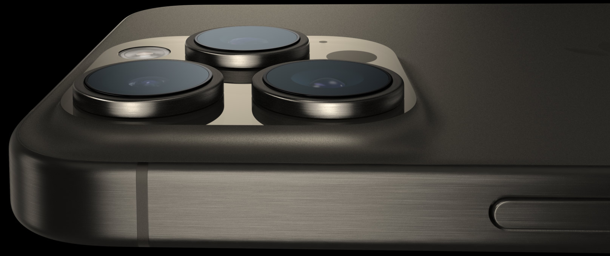
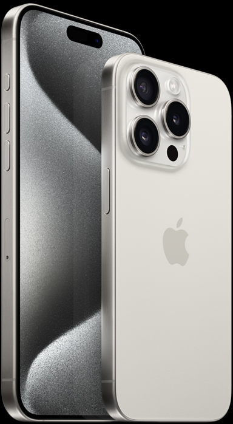
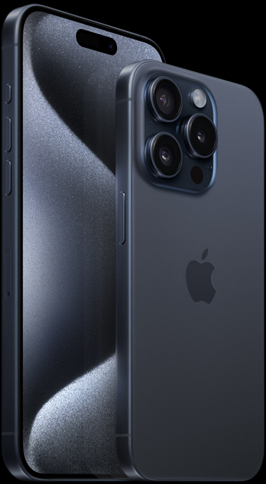
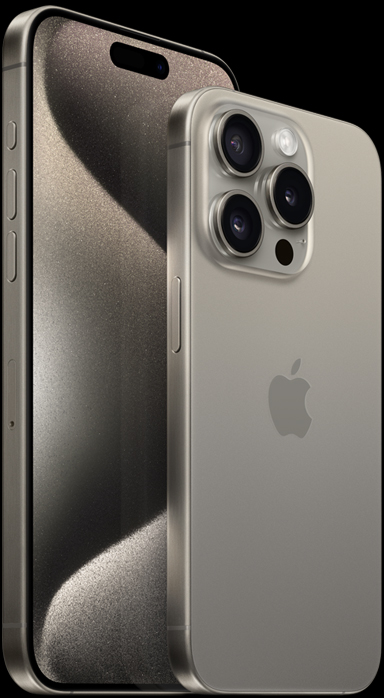
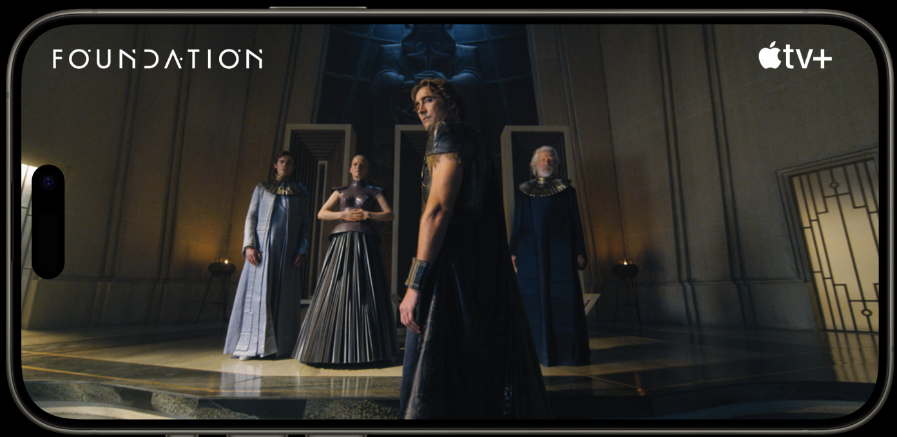

Signal
/ Object
An interaction study of material, performance, and interface states through the original iPhone 15 Pro project assets.
01 / Material response
Built to hold
the light.
The original project camera and frame studies are treated as evidence of edge behavior, optical depth, and material contrast. This page replaces retail language with a closer read of the object itself.
Frame registration / 146.6 × 70.6 × 8.25 mm

edge
02 / Finish calibrator
Four states.
One object.
Switch the original finish studies to compare how tone changes an otherwise identical device silhouette.



03 / Performance signal
Compute,
made visible.
The chip is not a sales badge here. It becomes a visual signal: a dense core surrounded by clear, readably separated interface information.
04 / Interface evidence
A screen is
a stage.
The original display composition becomes a framed interface plane—an example of hierarchy, content contrast, and immersive horizontal media treatment.

Large-format content, contained by a physical edge. The composition lets the device disappear without losing its frame.